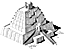

Woolley's reconstructionHow did Woolley create his reconstruction? He used evidence from his excavations, he read ancient descriptions and explored the ruins of other ziggurats. At Ur, Woolley found baked bricks of Nabonidus on the upper levels of the ziggurat. He thought that Nabonidus' builders had added new layers on top of the old ziggurat. Woolley compared the size and shape of other ziggurats from Nabonidus' time with the remains he found at Ur. He concluded that Nabonidus had the ziggurat built higher by several stages. |